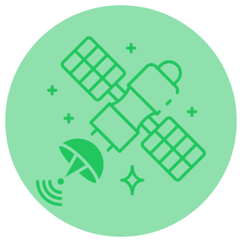
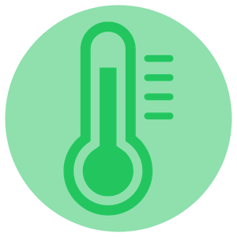
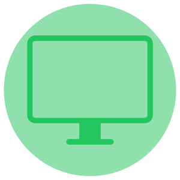
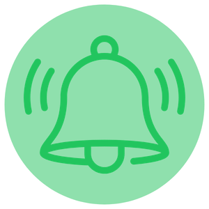
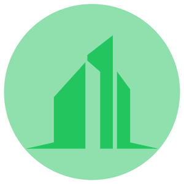
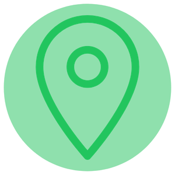
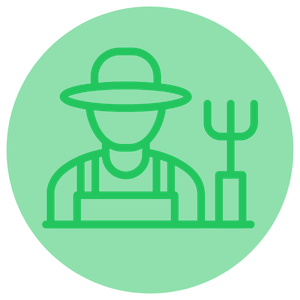
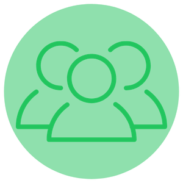
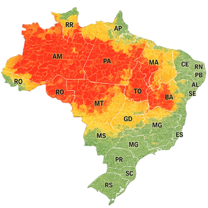
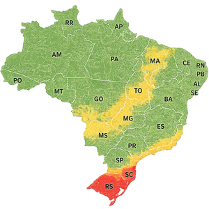

Monitoramento
inteligente de
Queimadas e
Enchentes
Plataforma que combina dados de satélites da NASA/INPE com sensores locais para proteger vidas, cidades e o meio ambiente através de alertas inteligentes em tempo real


O Problema
Qual problema a solução pretende resolver
Queimadas e enchentes têm causado grandes impactos ambientais, sociais e econômicos em diversas regiões do Brasil. Muitas vezes, a falta de monitoramento em tempo real e de alertas rápidos dificulta a prevenção e aumenta os danos para cidades, agricultores e moradores de áreas de risco. O OrbitSafe surge para utilizar tecnologia espacial e sensores inteligentes na identificação antecipada desses desastres, permitindo ações mais rápidas e eficientes.
Tecnologia
Tecnologias utilizadas na solução

Dados Satélite
NASA / INPE

Sensores Locais
Temperatura / Umidade

Plataforma Web
Interface Intuitiva

Alertas Inteligentes
Notificação em Tempo Real
O OrbitSafe utiliza dados satelitais de instituições como NASA e INPE, integrados a sensores locais, para monitorar condições ambientais em tempo real. O principal diferencial da plataforma é o **Índice de Risco OrbitSafe (IRO)**, um indicador de 0 a 100 que calcula a probabilidade de ocorrência de queimadas e enchentes em uma determinada região. O IRO é gerado a partir da análise de fatores como temperatura, umidade, histórico climático, dados orbitais e informações coletadas pelos sensores locais. Com base nesse índice, o sistema classifica o nível de risco e gera alertas automáticos para apoiar a tomada de decisões preventivas. Dessa forma, a tecnologia permite identificar situações de perigo com antecedência, contribuindo para a proteção da população, do meio ambiente e do patrimônio.
Objetivos
Principais objetivos do projeto
O principal objetivo do OrbitSafe é auxiliar na prevenção de queimadas e enchentes através do monitoramento contínuo e da emissão de alertas antecipados. O projeto busca reduzir impactos ambientais, proteger comunidades em áreas vulneráveis, apoiar órgãos responsáveis no gerenciamento de riscos e oferecer informações confiáveis para agricultores e gestores públicos.
Público-Alvo
Pessoas e grupos impactados pela solução

Cidades
Gestão municipal e planejamento urbano

Defesa Civil
Respostas rápidas e emergenciais

Agricultores
Proteção de lavouras e propriedades

Moradores
Segurança em áreas de risco
A solução atende diferentes grupos afetados por desastres naturais: prefeituras e gestores públicos, defesa civil, agricultores, moradores de áreas de risco e empresas do setor ambiental, todos beneficiados por alertas precisos e dados confiáveis.
Benefícios
Principais vantagens da solução
Monitoramento em Tempo Real
Dados atualizados continuamente
Alertas Antecipados
Notificações antes dos desastres
Cobertura Nacional
Todo o território brasileiro monitorado
Integração com a Defesa Civil
Resposta coordenada e eficiente
A solução foi desenvolvida para atender diferentes grupos impactados por desastres naturais. Entre os principais públicos estão prefeituras, defesa civil, agricultores, moradores de áreas de risco, empresas do setor ambiental e instituições responsáveis pelo monitoramento climático e territorial.
Aplicação no Cotidiano
Como a solução ajuda os usuários na prática
Coleta de Dados
Satélites e sensores coletam informações em tempo real
Análise Inteligente
Algoritmos processam e identificam riscos potenciais
Emissão de Alertas
Notificações enviadas para autoridades e população
Ação Preventiva
Medidas são tomadas antes do desastre acontecer
Na prática, o sistema poderá alertar moradores sobre riscos de enchentes antes que o problema aconteça, permitindo evacuações mais rápidas e seguras. Agricultores poderão acompanhar condições climáticas e riscos de queimadas em suas plantações, enquanto órgãos públicos terão acesso a mapas e dados atualizados para agir de forma preventiva.
Mapa de Riscos no Brasil
Regiões mais afetadas por incêndios e enchentes
Incêndios Florestais

Regiões mais afetadas
Muito Afetada
Afetada
Pouco Afetada
Enchentes e Alagamentos

Regiões mais afetadas
Muito Afetada
Afetada
Pouco Afetada
Contato e Quiz
Entre em contato conosco e teste seus conhecimentos
Realize o nosso Quiz
Teste o seu conhecimento. Clique no botão abaixo!
QUIZ